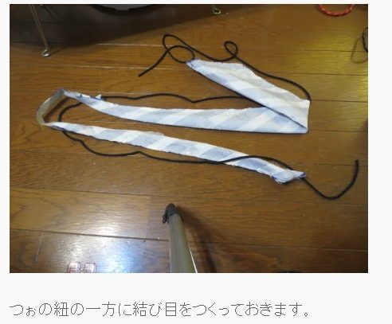
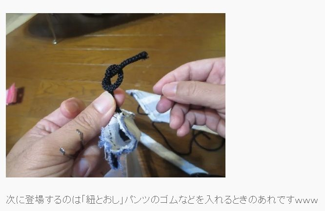

初心者と熟練者が交錯する！はじめてのネクタイづくり（後編）
「初心者と熟練者が交錯する！はじめてのネクタイづくり（中編）」の続きだ。前回は天文台のサイトになぜか掲載されていたPDF式の型紙を発見し、それに従って順調にネクタイを作っていったさまを描いた。
以降、特に記載がない限り、引用元は以下のとおり。那須香大阪天文台「ネクタイの作り方（型紙無料ダウンロード）How to make ties!(You can download the paper pattern free.)」http://nazca-osaka.org/wordpress/?page_id=281（最終閲覧日：2025年12月12日）
ネクタイはすでに縫い合わせられ、残りの工程は「ネクタイを裏表に返す」のみとなった。
これまでに何度か「ひも状のものを縫い合わせ、裏表に返す」という作業はやったことがある。ワンピースの肩紐を作るときなどだ。服を作る前までは肩紐なぞ特に気にしたことはなかったが、いざやってみるとそれを作るのはかなり骨の折れる作業である。ネクタイは要するに大きな紐であるから、その作業をやらなければならない。（※ネクタイのつくり方によっては「裏表に返す」が必要のないものもたくさんある。やりたくない人にはたくさんの逃げ道があり、下の記述を見て慄いた人はそれを探してみるといいと思う。）
ここでわたしは、あまりに自由にレシピが描かれているがゆえに既にほとんど見ていなかった天文台のwebサイトをもう一度見ることにした。紐のひっくり返し方はおおかた想像がつくが、万が一何かミスがあってやり直しになることなどがあれば、ネクタイの生地に無駄な皺が寄ってしまったり、汚く仕上がってしまったりする。この人がどうやっているか知っておけば、そのコツを踏まえた上でスムーズに工程を進められるだろうと考えた。そしてわたしはwebサイトを見た。

全然分からない……「つぉ」とは、何だろう。とりあえずこの画像を見つつ、似せて進めてみる。そこらへんにあった並太の毛糸を使ってみた。この人の使っている紐と同じくらいの太さだったからだ。つぉ……？ 先ほどの謎の単語に頭が引っ張られており、自分が指示どおりにできているか分からない。
次の画像がこれだ。

「あれですｗｗｗ」。久しぶりに「ｗ」を見た気がする。もうすぐ仕上がるネクタイを前に、とにかく筆者のテンションが上がっているのが伝わってくる。それは喜ばしいことだが……
全然、分からない！
こういう時、裁縫用のチュートリアルであれば、素材別に指示してあることが多い。「●●の生地を使っている場合はこのように、〇〇を使った場合はこのようにするとよい」のように。このレシピは書かれていない。それはそうだ、この記事を書いている方は裁縫のプロではなく、天文台の人なのだから！
なかなかうまくいかない時間が続いた。試行錯誤し気がついた、原因はおそらく生地の違いであろう。このwebサイトでの使用生地は綿100%。綿100%といってもいろいろあるが、写真を見る限り、おそらくシーチング生地なのではないかと思う。シーチング生地は「シーツ」が語源と言われている。縦糸と横糸を平織りして作る布だ。構造が複雑でないので扱いやすい。一方で、わたしの扱っている生地は元々が防炎カーテンである。防炎加工がされている糸を間に挟んでいるため、シーチング生地よりもかなり厚みがある。さらに接着芯を貼ってしまったため、この記事のネクタイの写真に比べるとかなり厚みがあるように感じられる。さらにわたしの生地のほうがバイアス方向に伸びやすいようだ。引っ張ろうとしていくとどんどんネクタイが伸びてしまう。全然生地がひっくり返らないのだ！
ひとりで30分ほど苦しみ続けた末、ついにわたしは泣きそうになり、迷った末、ゲームをしている妻を呼んだ。妻は裁縫をする人ではないが、わたしが頑張っているときにいつも優しく声をかけてくれ、力になってくれる。とにかく泣き言を言える相手がほしかった。妻は推理ゲームをやっていて、頭を使う作業をしていたにも関わらず来てくれた。やさしい。泣きべそをかいているわたしを慰めたあと、妻は「参考にしているサイトを見せてくれる？」と言い、天文台のwebページを見ながらネクタイをひっくり返そうとしてくれた。
「分かんね～！」そうだよね！？
しかし妻はこういったときに強い人で、わたしがピーピー泣いていた部分を爪でなんとかひっくり返してくれ、力技で通り抜けてくれた。この時点では、もうパソコンは閉じていた。わたしと妻の協力戦である。マンション中に響き渡るかと思われる大きな声を出しながら、わたしと妻はネクタイをひっくり返した！
「〇〇！〇〇！〇〇！〇〇！〇〇！〇〇！〇〇！〇〇！〇〇！〇〇！〇〇！」
ここに書けないような単語をたくさん叫び、ひっくり返し、文字どおり指を真っ赤にして、わたしたちは完成させたのである！

完成したネクタイからは想像がつかないくらい、長い工程のある製作だった。わたしは天文台のサイトと、何よりも妻に感謝した。
苦労して作ったネクタイは、バイアス裁ちが本当に美しく見える。当初の狙いどおりドレープ感がきれいに出ており、フォーマル感がしっかりあるネクタイになった。適度な厚みがあるところもわたし好みで、秋冬に着用できる。ウールジャケットなどのはっきりした質感のジャケットを着用しても負けない強さがあり、大変気に入った。
そして、わたしは大きな学びを得た。自分が何かのチュートリアルを見ながら裁縫をするときは、事前にレシピを読み込んでおこうと。「この工程は分かるだろう」と高を括らず、考えながら読む作業を先にやろうと。さらに、可能であれば、裁縫を知っている人からレシピを買ったほうがいいだろう。あまりに熟達している人向けのものだと、ユザワヤのもののように訳が分からなくなることがある。丁寧に説明してくれているものを探して買うとよい。その点でわたしはインディーズのパタンナーを信頼している（企業の作ったものよりも丁寧に作られていることが多い気がする。実際にそのように話している裁縫師を見たこともある）。料理のレシピにも似ている。料理人のレシピは時に難しすぎるが、料理研究家のレシピなら分かることがある。わたしはまだ料理研究家ならぬ、裁縫研究家から学ぶ段階なのかもしれない。
とにかく、たくさんの学びがあり、そして素敵なネクタイを作ることができた。わたしはしばらくネクタイにハマるだろう。もっともっと上手になって、この最初に作ったネクタイを「大変だったねぇ」と妻と笑い合える日がくれば、わたしはそれでいい。
こういう文章を集めた本『Knitting＆Sewing』を制作中です。応援よろしくお願いします。